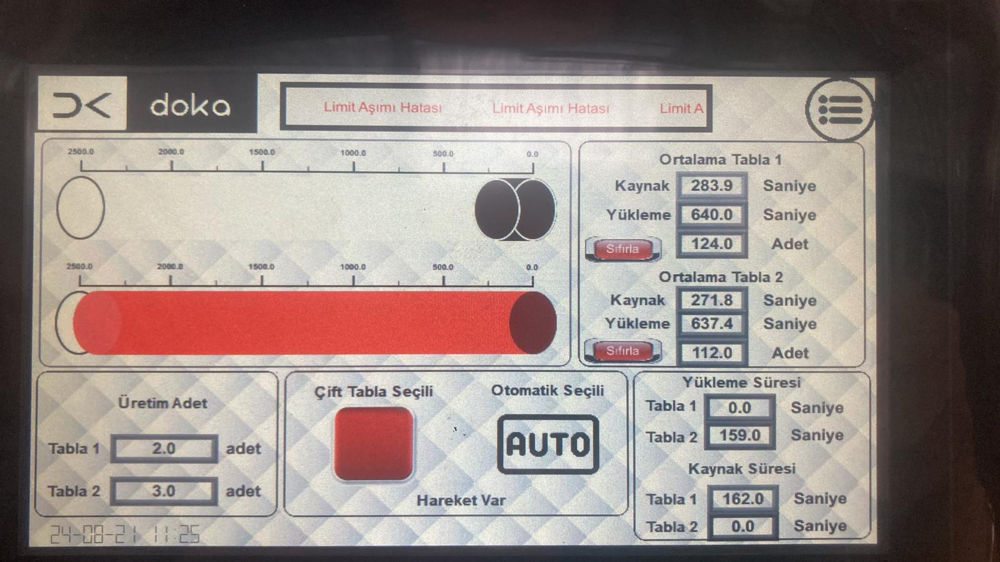
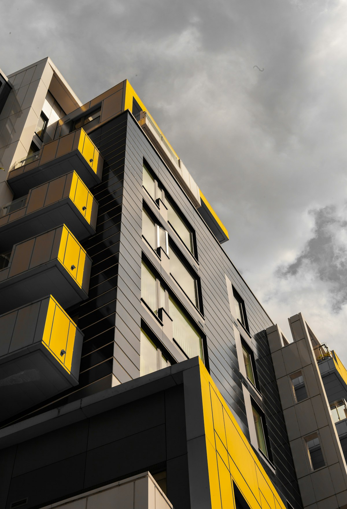
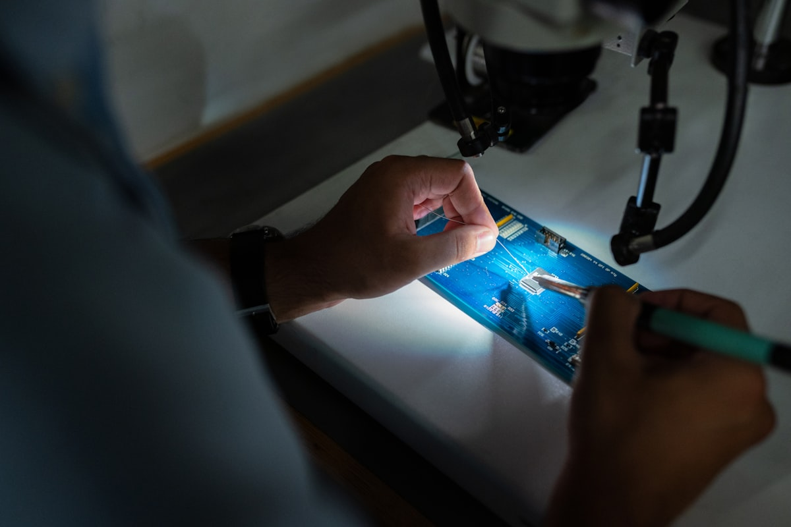

Proje Galerisi


Kaynak robotu ile hassas konumlandırıcının uç uca entegrasyonu. Kuru röle iletişimi, gerçek zamanlı konum geri besleme, PID ayarlama, güvenlik kilitleri. Alarm kayıt dahil HMI. Önceden gösterici bakım ile otomatik ayarlama, kesintisiz süre 35% azaltırken ekipman ömrünü uzattı.
Siemens S7-1200 PLC kullanan kaynak robotunu hassas konumlandırıcıyla entegre ettim. Robot kontrolü için kuru röle iletişimi uyguladım. Profinet ve Modbus RS-485 üzerinden Veichi SD700 servo sürücülerle gerçek zamanlı konum geri besleme. Optimal performans için PID otomatik ayarlama. Güvenlik kilitleri ve acil durdurma mantığı. Alarm kayıt ve tanı dahil HMI. Önceden gösterici bakım algoritmaları kesintisiz süre 35% azalttı.
Gerçek zamanlı konum geri besleme, hız profilleme ve moment sınırlamayla tutarlı, yüksek kaliteli kaynak operasyonları sağlayan çok eksenli servo kontrol.
Senkronize hareket kontrolü ve koordineli çalışma alanı yönetimiyle kaynak robotu ve konumlandırma sistemi arasında kesintisiz entegrasyon.
Servo performansını izleyen, anormallikleri tespit eden ve planlı bakım önerisinde bulunan ileri düzey izleme algoritmaları ile plansız kesintisiz süre 35% azaltıldı.
Gerçek zamanlı tanı, el kontroller, üretim izleme, alarm kayıt ve kapsamlı raporlama yetkinlikleriyle user-friendly interface.
Operatör koruması için acil durdurma, ışık perdeler, güvenlik kilitleri ve iki el kontrol dahil tam güvenlik devre uygulaması.
Optimize hareket profilleri ve otomatik proses koordinasyonla 40% üretim verimlilik artışı ve 25% döngü süresi azaltma.

Entegre motor kontrol ve robot koordinasyonu

Gerçek zamanlı tanı ile operatör HMI

Bu CV'deki tüm projeler Doka Mühendislik'in izniyle paylaşılmıştır. Gizlilik anlaşmalarına saygı göstermek amacıyla tescilli bilgiler, müşteri adları ve hassas teknik ayrıntılar genelleştirilmiştir.